Considere novamente esse ponto. É aqui. É nosso lar. Somos nós. Nele, todos que você ama, todos que você conhece, todos de quem você já ouviu falar, todo ser humano que já existiu, viveram suas vidas. A totalidade de nossas alegrias e sofrimentos, milhares de religiões, ideologias e doutrinas econômicas, cada caçador e saqueador, cada herói e covarde, cada criador e destruidor da civilização, cada rei e plebeu, cada casal apaixonado, cada mãe e pai, cada crianças esperançosas, inventores e exploradores, cada educador, cada político corrupto, cada “superstar”, cada “lider supremo”, cada santo e pecador na história da nossa espécie viveu ali, em um grão de poeira suspenso em um raio de sol.
A Terra é um palco muito pequeno em uma imensa arena cósmica. Pense nas infindáveis crueldades infringidas pelos habitantes de um canto desse pixel, nos quase imperceptíveis habitantes de um outro canto, o quão frequentemente seus mal- entendidos, o quanto sua ânsia por se matarem, e o quão fervorosamente eles se odeiam. Pense nos rios de sangue derramados por todos aqueles generais e imperadores, para que, em sua gloria e triunfo, eles pudessem se tornar os mestres momentâneos de uma fração de um ponto. Nossas atitudes, nossa imaginaria auto-importancia, a ilusão de que temos uma posição privilegiada no Universo, é desafiada por esse pálido ponto de luz.
Nosso planeta é um espécime solitário na grande e envolvente escuridão cósmica. Na nossa obscuridade, em toda essa vastidão, não ha nenhum indicio que ajuda possa vir de outro lugar para nos salvar de nos mesmos. A Terra é o único mundo conhecido até agora que sustenta vida. Não ha lugar nenhum, pelo menos no futuro próximo, no qual nossa espécie possa migrar. Visitar, talvez, se estabelecer, ainda não. Goste ou não, por enquanto, a terra é onde estamos estabelecidos.
Foi dito que a astronomia é uma experiência que traz humildade e constrói o caráter. Talvez, não haja melhor demonstração das tolices e vaidades humanas que essa imagem distante do nosso pequeno mundo. Ela enfatiza nossa responsabilidade de tratarmos melhor uns aos outros, e de preservar e estimar o único lar que nós conhecemos… o pálido ponto azul.
